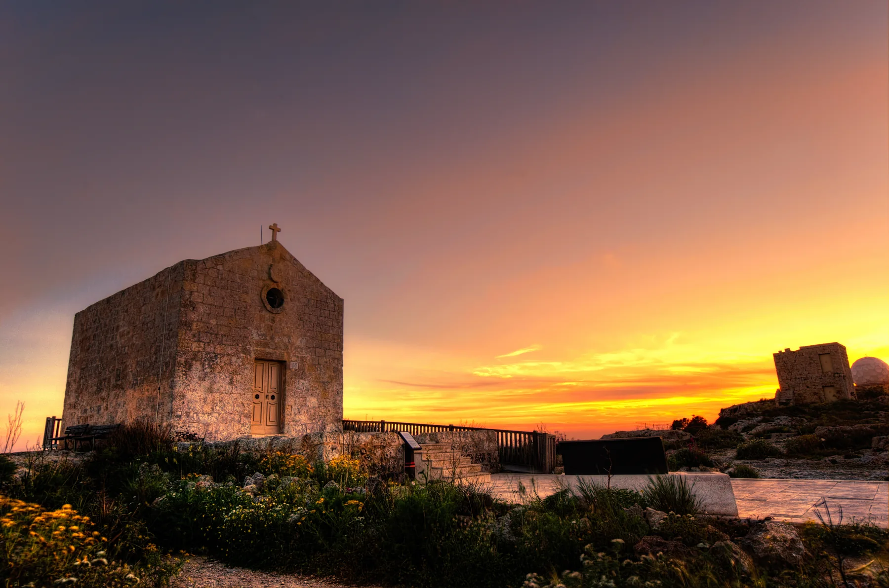

This is the civic and residential reference point. It does not prove that a listing sits beside the church, shops or a particular bus stop.

ĦAD-DINGLI · MALTAVillage life.
Village life.
Cliff edge.
Ħad-Dingli's residential core and its famous western landscape belong to one locality but are not one interchangeable setting. The exact address decides everyday access; the cliffs never become a promised view.
READ THE LOCALITY IN PARTS
A western village with a separate landscape edge.
The parish and main streets establish the everyday village centre. Triq Panoramika and the cliff edge form a different open-landscape context, while Buskett and Rabat-facing approaches remain nearby but distinct.
The landscape is real; a view from a home is not automatic. Check the building, orientation, access and weather exposure.
Treat them as separate route and landscape contexts. Never replace an actual route with a line across the map.
WHAT TO CHECK AT A VIEWING
The address answers the practical questions.
A Dingli label cannot establish gradient, pavement continuity, evening traffic, parking, wind exposure or the real route to groceries and buses. Test those details from the entrance at the time they matter.
Street and entrance
Confirm steps, lift access, pavement gaps, slope and the path between parking and the front door.
Walk the errands
Check the actual route to a useful shop rather than assuming the village centre is an easy walk.
Visit in real conditions
Open terrain and a sunset photograph do not describe the wind, temperature or light at a specific home.
Keep localities distinct
Rabat and Siġġiewi have their own editions and should not be folded into Dingli.
EVERYDAY ORIENTATION
Start with durable public anchors.
The council, live public-health directory and transport operator provide a responsible first check. Opening hours, stock, services and departures remain live information.
Ħad-Dingli Local Council
Use the official council site for local notices and administration instead of freezing service details into this edition.
Dingli Community Clinic
Primary HealthCare lists the clinic and places Dingli in the Rabat Health Centre catchment. Recheck services and appointments live.
Routes 52 and 56
Malta Public Transport publishes these Dingli corridors. That does not guarantee a frequency, nearest stop or property-specific journey time.
MyConvenience Dingli 1
The operator lists a branch on Triq Il-Kbira. Confirm current hours, stock and the actual route from the property.
OUTDOORS, WITH CONTEXT
The cliffs are a destination, not a housing promise.
Visit Malta lists the Dingli, Fawwara and Wied iż-Żurrieq walk. Use current route guidance, weather judgement and suitable equipment; the existence of a walk says nothing about access from an individual home.
A cliff-edge landmark
The photographed chapel anchors the landscape section. It is not evidence that every Dingli address is near the cliffs.
Check live conditions
Confirm route, daylight, weather and access on the day. This edition draws no hiking line or shortcut.
FOOD, WITHOUT RANKINGS
Three contexts, three different checks.
These examples come from an operator or authority source. They are orientation points, not a “best of” list, and they do not prove a comfortable walk from a property.
Barbajean
The operator places its modern Mediterranean restaurant in Dingli village. Check its live menu, opening and booking arrangements directly.
The Cliffs
The operator locates its cafeteria and interpretation centre on Triq Panoramika. Keep it in the landscape context, not the village-core errands list.
35' North
The MTA register currently lists this restaurant on Triq il-Kbira. A licence record establishes neither quality nor today's trading status.
Open the wider Dingli context only when you need it.
The map frames the village, western edge and surrounding place labels for orientation. It deliberately draws no boundary, route, distance, travel time or listing location and loads from OpenStreetMap only after your click.
Ħad-Dingli Local Council · Western Regional Council · Primary HealthCare clinics · Rabat Health Centre · Malta Public Transport: Dingli · Visit Malta walks · MyConvenience locations · Barbajean · The Cliffs · MTA restaurant register. Volatile details require a fresh check.